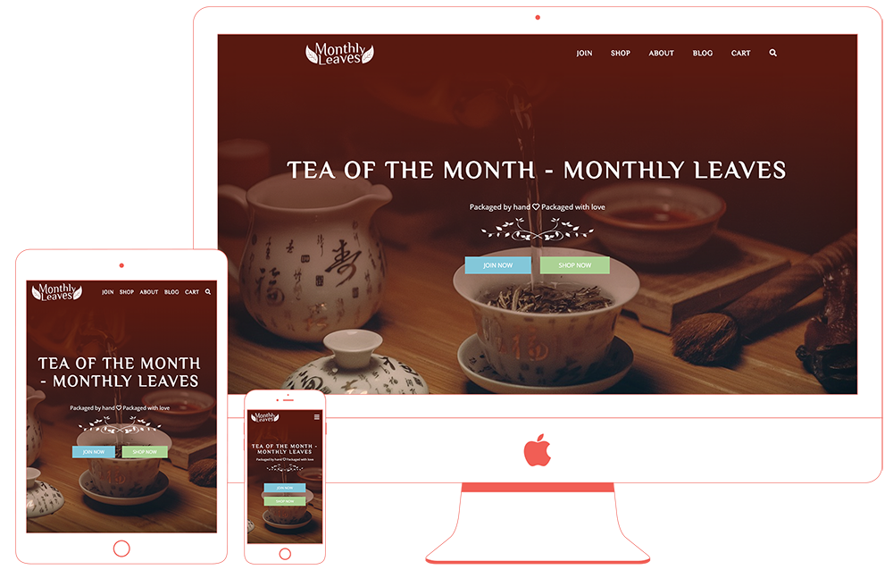
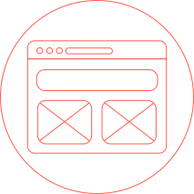
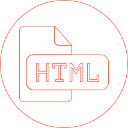
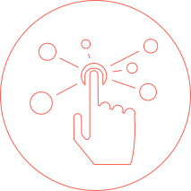
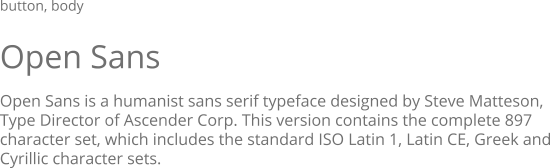

Monthly Leaves
기업페이지 반응형 제작.
매달(monthly) 홍차(leaves)를 받아볼 수 있는 구독서비스를 메인으로 제공하는 브랜드입니다. 메인인덱스, 구독(join), 개별구입(shop), 어바웃(about), 블로그(blog), 구매입력(cart) 페이지를 제작했습니다. 반응형으로는 4가지 사이즈에 맞춰 제작했습니다.
Workflow
-

자료조사와 구상을 하고,
와이어프레임을 작성 -

HTML/CSS로
프로토타입 제작 -

인터랙티브 효과 적용
및 반응형 사이즈 제작 -
반응형 테스트 하면서
오류 수정하고 마무리
Design, Wireframe
키워드 #고급스러움 #갈색
좋은 퀄리티와 다양한 종류의 차를 저렴하게 구독형식으로 받아 볼 수 있는 서비스입니다. 메인 컬러를 홍차를 우렸을 때 나오는 색으로 선정해 ‘차’를 떠올릴 수 있게 했습닏다. 상품 이미지를 찻잎에 집중할 수 있게 편집해서 가공이 덜 들어간, 친환경적이고 고급스러운 이미지를 나타냈습니다. 간결한 레이아웃으로 차분한 느낌을 주었습니다.
Style Guide
메인 컬러는 커피가 연상되는 고동색과 차별화를 두어 홍차 우려낸 색으로부터 연상할 수 있는 적갈색을 선정하였습니다.
적갈색의 진한 바탕이 돋보일 수 있게 폰트컬러는 하얀색으로, 밝은 바탕에서는 폰트컬러를 적갈색으로 하여 통일감을 주었습니다. 포인트 컬러는 파스텔 톤으로 이동버튼, 호버효과 등에 조금만 쓰여 눈에 띄도록 했습니다.
로고와 제목, 메뉴에는 Philosopher 폰트를 사용하여 부드럽고 우아한 느낌을 나타냈습니다. 본문 및 나머지 부분에는 고딕계열의 Open Sans 폰트를 사용하여 깔끔하게 가독성을 높였습니다.
-
#581910
R 88 G 25 B 16 -
#FFFFFF
R 255 G 255 B 255 -
#83C7D9
R 131 G 199 B 217 -
#ACD295
R 172 G 210 B 149 -
#FEC1D6
R 254 G 193 B 214
-

UI UX Design
-헤더, 메인메뉴-
헤더는 상단에 고정해서 페이지를 스크롤하고 어느 부분에 있어도 항상 보이게 되어서 사용자가 다른 페이지로 이동을 쉽게 할 수 있습니다. 헤더의 높이가 너무 얕으면 눈에 띄기 힘들고 클릭하기 어렵기 때문에 적당한 높이로 만들었고, 메뉴 텍스트의 주변을 클릭해도 이동할 수 있도록 영역을 잡았습닏다.
메인 메뉴는 헤더의 오른쪽에 배치했고, 현재 해당하는 페이지의 메뉴 색을 변경하여 어느 페이지를 보고 있는지 바로 알 수 있습니다.
-메인 컬러의 사용-
메인 이미지 앞에 :before 가상 클래스를 사용한 메인컬러~투명 그라디언트 마스크를 주어 따로 이미지 수정하는 것 없이 메인 이미지 변경을 용이하게 했습니다. 메인 컬러는 헤더의 배경색에도 쓰였기 때문에 처음 인덱스 페이지 상단은 봤을 때는 헤더와 이미지 부분이 분리되지 않고 연결되어 있는 것처럼 보이는 시각적 효과를 주었습니다.
메인 컬러는 폰트에도 사용하여 전체적으로 통일감이 있습니다.
-레이아웃-
배경 이미지나 색상이 아닌 텍스트 등의 주요 내용은 가운데로 배치하여 시선이 분산되지 않고 가독성을 높였습니다. 배경 이미지는 브러우저창의 너비 꽉차게 두고 attachment:fixed로 설정하여 답답하지 않고 시원한 느낌이 들게 하였습니다.
-푸터-
푸터에는 각 sns로 연결된 버튼이 눈에 잘 띄도록 아이콘을 이용했습니다.
Prototype
- 인덱스 페이지
가장 먼저 보이는 페이지이기 때문에 메인 이 브랜드의 정체성이 보이는 사진을 선정하고, 메인 타이틀 아래에 바로 구매페이지로 가는 버튼을 배치했습니다. 하단에는 브랜드의 주요 상품에 대한 설명이 간결하게 들어가 있고, 구매페이지로 가는 링크가 각 설명 아래에 있어서 바로 이동할 수 있습니다.
홍차 구독과 판매가 주 목적인 브랜드여서 홍차의 느낌을 주는 컬러를 메인으로 차 관련 이미지를 주로 사용했습니다. 메인 이미지 바로 다음에는 사이트 이용방법, 구독과 일반 구매의 차이점, 차의 종류 등을 보여주어 사용자가 가장 궁금해할 수 있는 부분을 바로 알 수 있게 하였습니다. 가장 하단에는 구매자 리뷰를 띄워 신뢰감을 높였습니다.

- 서브 Shop페이지
메인 이미지에 모든 상품 보기 버튼을 배치하여 모든 상품을 볼 수 있는 페이지로 이동할 수 있는 구조입니다. 현재 페이지에서는 각 카테고리 별로 인기있는 상품을 4개씩 볼 수 있습니다. 하단에는 무료배송 문구를 크게 배치하여 쉽게 발견할 수 있습니다.
일반 판매 페이지의 목적에 맞게 각 상품의 이미지가 돋보이도록 찻잎만 보이게 하였고, 항목별로 별점 리뷰가 시각적으로 보일 수 있게 했습니다. 하단에 sns와 이메일 구독 섹션을 배치해 사용자가 당장 구매를 하지 않더라도 브랜드의 소식을 계속 접할 수 있도록 유도했습니다.
Interactive Elements
기본적인 애니메이션을 css를 이용해 만든 후 jquery scrollTop 기능을 이용하여 스크롤 하면 실행될 수 있도록 작업하였습니다. 모바일에서도 문제없이 나타날 수 있도록 테스트하면서 조정하였으며 최대한 css를 이용해 홈페이지를 가볍게 구현했습니다.
-
인덱스 페이지 - 메인 섹션
h2 : 타이핑 효과 / 버튼 : 위로 나타나는 효과 -
인덱스 페이지 - works 섹션
항목이 하나씩 위로 나타나는 효과 -
인덱스 페이지, 서브 shop - teas 섹션
항목이 하나씩 위로 나타나는 효과 / 이미지 hover : 확대
버튼 hover : 버튼 테두리 효과 (홈페이지 모든 버튼에 적용됨)
-
공통 푸터 – sns 링크 부분
각 sns 아이콘 hover : 배경이 투명하게 -
서브 join – choice 섹션
상품 이미지가 2초마다 변경 -
서브 shop – main 섹션
h2 : letter-spacing 변화를 주며 나타남 / 버튼 : 위로 올라옴
-
서브 shop – free 섹션
섹션 mouseenter : 비행기 모양 아이콘이 오른쪽으로 이동 / 섹션 mouseleave : 비행기 모양 아이콘이 뒤집히고 원래 위치로 돌아옴. 이후 다시 뒤집힘 -
서브 shop – sns 섹션
스크롤 하면 사진이 위로 올라오면서 나타남 / 이미지 hover : 사진 확대
Responsive Web
반응형은 총 5가지 사이즈를 고려하였습니다. 1920px(PC)를 기본으로 제작하고 미디어쿼리를 이용하여 max-width 1599px(노트북), max-width 1024px(태블릿 가로), max-width 768px(태블릿 세로), max-width 414px(모바일) 사이즈로 작업했습니다.
‘background-attachment:fixed’ 속성이 ios 기기에서 기본적 오류로 제대로 보이지 않고 흐리게 처리가 되는 것을 발견해 태블릿 사이즈 부터는 조정을 했습니다. 페이지 별로 대표 이미지 하나는 가상클래스에서 background-image로 넣어 fixed 된 것으로 두고 나머지는 ‘background-attachment:fixed’ 되어 있던 부분을 ‘initial’로 바꾸어서 ios에서 정상적으로 보일 수 있게 했습니다.